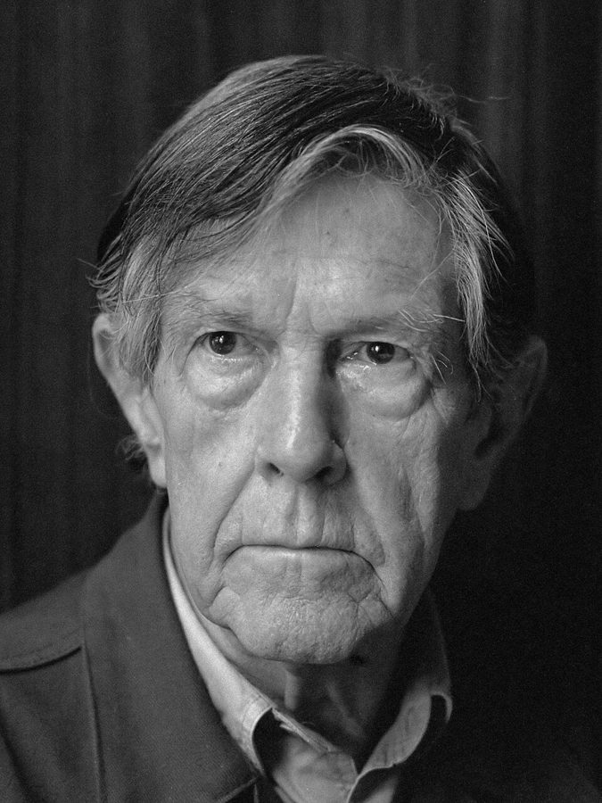
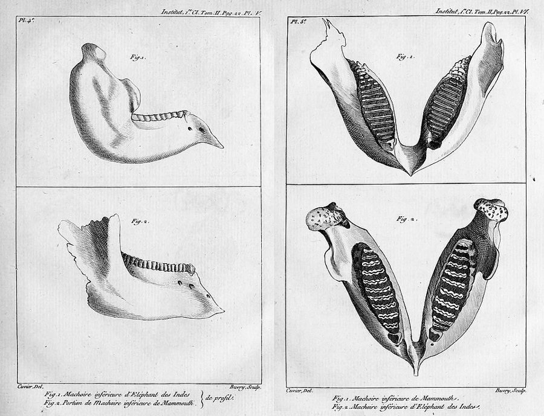
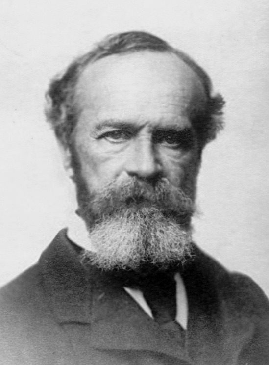
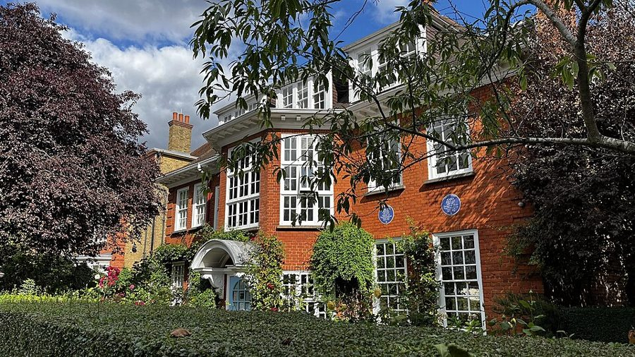

这一页在做什么
全书的开头。Phillips 从作曲家凯奇（John Cage）的一句玩笑讲起：世上的苦难「刚刚好」。他借这句话立起全书的题目：达尔文和弗洛伊德都着迷于那些在他们看来躲不掉的苦难，也都把死亡放进生命故事的中心。这一页先谈上帝退场以后「自然」这个词怎样被用来说服人，再看两人各自怎样讲死亡，最后埋下全书的两条线索。读的时候分清两样：哪句话是 Phillips 引的别人，哪句是他自己说的「仿佛」「似乎」。

作曲家约翰·凯奇，1988 年摄。全书的第一句话就是他讲的一个小故事。Rob Bogaerts for Anefo，公有领域（CC0），维基共享资源 读之前：这一页在全书的哪里
这是正文的第一页，前面只有一句题词，出自 William James。序章是全书的总纲，后面三篇的题目都在这里先露一面：第 11、16 段说弗洛伊德那一半「我们将会看到」，指的是弗洛伊德篇讲《超越快乐原则》的地方；第 14 段点出全书的两条线索：蚯蚓和反传记。第 13 段的「我说过」指回第 3 段。序章的后半在下一页，接着讲失去、哀悼，和两人为什么「不开药方」。
如果有一部分苦难怎么也去不掉，人还能凭什么把这个世界当成值得爱的地方？
读的时候带着这几个问题。不用先找答案，读完回来对照「检查一下理解」。
Phillips 自己说凯奇的话从政治上看「骇人」，为什么还拿它给全书开头？§1
上帝退场以后，说一件事是「自然的」，会起什么作用？§1
达尔文怕的是哪一种死，弗洛伊德盼的是哪一种死？§2
Phillips 为什么不肯把两人叫作悲观主义者？他让读者到哪里去找两人的道德？§3
这一页的路线
三节的走法一样：先摆一句别人的话，再由 Phillips 往开里读。§1 从凯奇的玩笑起头，借 Raymond Williams 的一句话转进「自然」这个词，在这里停得最久；读到第 6 段会觉得突然从「自然」跳到了「词汇」，其实是同一件事的另一面：谁在替自然说话。§2 很短：先说两人都以冲突为底色，再各引一句，达尔文谈灭绝，弗洛伊德谈个人怎样死。§3 最密：死亡驱力出场后，第 13 段一口气谈到正义、适应和上帝之死；第 14 段转到「他们不是悲观主义者」，两条线索埋在这里；第 15 段起收在死亡和哀伤上。
§1 第 1–7 段
§2
§3 第 12–17 段
引的话
Phillips
凯奇的笑话
苦难刚刚好 政治上骇人
「自然」一词 Williams
描述还是处方
灭绝 晚年笔记
死于内部
死亡驱力
不是悲观 蚯蚓·反传记
Stevens Putnam
死亡故事 照亮生命
本站示意图。蓝点是 Phillips 引的话（凯奇、Williams、达尔文、弗洛伊德、诗人和哲学家），橙点是他读出来的意思；折线是阅读顺序，虚线是原书的两处空行。 作者落在哪： Phillips 提出，两人都把一部分苦难看成活着本身的一部分，都用死亡来读懂生命；但把他们当成悲观主义者太省事了。他说，在达尔文一辈子对蚯蚓的兴趣、弗洛伊德一辈子对传记的反感里，能找到他们赞美的东西。
分节地图
这一页是原书序章的第 1–3 节。原书没有小标题，只在节与节之间空一行；粗体的节名是本站起的，斜体是这一节第一段开头的几个词，在电子书里搜它就能跳过去。读完打个勾。
凯奇的笑话：苦难刚刚好约 1200 词 John Cage tells the story somewhere … 凯奇的笑话开头。第 4 段起谈「自然」这个词，第 7 段收在转瞬即逝之美上。 冲突是生命的底色约 600 词 Because of the Oedipus complex, … 两人都以冲突为底色。第 10、11 段各引「达尔文」和弗洛伊德一句：一句谈灭绝，一句谈怎样死。 死亡驱力，不再有救赎约 1400 词 Freud at his most fantastically speculative … 死亡驱力出场。第 13 段问正义，第 14 段埋下蚯蚓和反传记两条线索，第 15 段起讲死亡和哀伤。
先用中文过一遍：这一页的概念
先把这一页用到、作者默认你懂的几个概念讲一遍。讲的是概念本身，作者拿它做什么，读原书时自己看。
§1 救赎 redemption 基督教的核心观念之一。redeem 原意是「赎回」：付一笔代价，把抵押出去的东西拿回来。神学里说，人因罪和上帝隔绝，耶稣被钉十字架，替人付了这笔代价，人因此得救，苦难也就有了意义和终点。世俗化以后，这个结构还在，只是换了许诺的一方：历史会进步、革命之后会有理想社会、科学会治好一切、心理治疗会让人彻底痊愈。共同点是相信眼前的损失，将来会被「兑现」。打个比方：像一个系统在设计时就假定，前面所有失败的操作，最后都会被一次全局的补偿事务抹平。不信救赎，不等于不在乎苦难，只是不再假定最后有人来结账。
在这一页： 第 2 段说上帝不再能救赎我们；第 3 段把「救赎式的」渴望和乌托邦并列；第 13 段分开不信救赎和不信正义；第 17 段问哀伤能不能变成救赎。
§2 俄狄浦斯情结 Oedipus complex 弗洛伊德的核心概念，名字取自索福克勒斯的悲剧《俄狄浦斯王》：俄狄浦斯在不知情中杀父娶母。弗洛伊德 1897 年在给朋友 Fliess 的信里第一次谈到这个想法，在《梦的解析》（1899 年底出版）里公开讨论，1910 年才用上「俄狄浦斯情结」这个名称。大意：三到五岁的孩子爱恋异性的父母，把同性的一方当对手，又因此害怕、内疚，最后放下这份欲望，转而认同同性的一方。他认为这一关过得不好，是神经症（neurosis）的根源。神经症是当时的说法，指焦虑、强迫、癔症这类找不到身体病因的心理困扰；美国的精神疾病诊断手册 1980 年起不再用它作总称。今天的心理学多把俄狄浦斯情结看作一种比喻，说它是人人都要经过的发展阶段，缺乏实证。
在这一页： 第 8 段。Phillips 用它说明弗洛伊德那边的冲突：欲望让我们活下去，又是被禁止的。他顺带说，「神经症患者」在弗洛伊德那里就是普通人的学名。
§2 灭绝 extinction 一个物种的最后一个个体死去，这个物种就灭绝了。18 世纪末以前，不少博物学家认为造物主创造的物种不会消失，挖到的奇怪化石，大概还活在人没去过的地方。法国解剖学家居维叶（Georges Cuvier）1796 年比较现生大象和猛犸象的骨骼，论证猛犸是一个已经不存在的物种，灭绝从此渐渐被当成事实。居维叶用一次次大灾难来解释灭绝；达尔文把它放进自然选择里：适应不了变化的环境就被淘汰，灭绝是常态，不是例外。今天一般估计，地球上出现过的物种，绝大多数已经灭绝。

居维叶论现生和化石大象的论文里的两幅图版：印度象和猛犸象的下颌骨。他由牙齿和颌骨的差别论证猛犸不是现生的象。论文 1796 年宣读。Georges Cuvier，公有领域，维基共享资源 在这一页： 第 10 段说灭绝是「死亡的死亡」，达尔文被无法挽回的失去缠住；第 16 段又说达尔文要讲的是物种怎样滑向灭绝。
§3 死亡驱力 death instinct（Todestrieb） 弗洛伊德 1920 年在《超越快乐原则》（Jenseits des Lustprinzips）里提出：生命里除了求生、求结合的冲动（他后来叫它爱欲，Eros），还有一股要回到无生命状态的力量；它转向外面，就成了攻击和破坏。他在书里自己说，接下来讲的是「猜想」（Spekulation）。德文是 Todestrieb，Trieb 是驱力，英译本常写成 death instinct，本站统一译「死亡驱力」。它不是想自杀的念头，是理论上假设的一股力量。提出以后争议很大：克莱因（Melanie Klein）一派把它当作核心，许多精神分析家不接受；今天的实证心理学没有证据表明有这样一种驱力。
在这一页： 第 12 段首次出场。Phillips 说这是弗洛伊德最异想天开的猜想，又说它有几分像艺术家，似乎要给每个人一种个人化的死。弗洛伊德篇会细讲。
书里的人和作品
按在书里出现的顺序排，标题前是节号。作品只讲到读懂这一页需要的程度。
§1 题词：William James《多元的宇宙》
William James。拍摄年份不详。作者不详，公有领域，维基共享资源 序章开头的题词出自《多元的宇宙》（A Pluralistic Universe，1909），是 James 在牛津 Manchester College 的希伯特讲座（Hibbert Lectures）。原句在第七讲「经验的连续性」里，说的是意识：每一个最小的经验都溢出自己的定义，往「更多」里流去，只有概念才和自身严丝合缝。所以 excess 在他那里是「溢出、多出来」，不是「放纵」。Phillips 第 2 段说世上的不幸「过剩」（the excess of unhappiness），可以这样读：题词先把「多出来」说成自然本来的样子。
William James 1842–1910 美国哲学家、心理学家，实用主义的代表人物，长年在哈佛任教。在这本书里只出现在题词中。
§1 凯奇和他讲的故事Phillips 说凯奇「在某处」讲过这个故事。凯奇自己的版本，是他 1959 年的录音作品《不确定》（Indeterminacy）里的第 49 个小故事，后来印进文集《沉默》（Silence，1961）：纽约市政厅楼上的一场音乐会，节目单上说世上的痛苦（pain）太多；散场后凯奇说不同意那条说明，作曲家反问，你不觉得已经够多了吗？凯奇答：我觉得刚刚好。Phillips 的转述换了些字眼，意思没变。第 3 段的「时髦的禅」，指凯奇信禅：他听过铃木大拙（D. T. Suzuki）讲禅，作品里常用偶然和静默。
约翰·凯奇 John Cage，1912–1992 美国作曲家，最有名的是《4′33″》（1952）：演奏者在台上一个音也不弹。在这一页里讲了开篇的笑话。
§1 Raymond Williams 的《关键词》《关键词》（Keywords，1976）是一本小词典，一个词一篇，追溯 culture、society、nature 这类大词的意思怎样演变、背后站着谁的立场。Phillips 第 4 段引的是 nature 词条开头那句：自然「也许是语言里最复杂的词」。Williams 在词条里分出几层意思：事物的本性，支配世界的内在力量，物质世界本身。Phillips 接着这句话往下讲：「自然」既被当作我们的根基，又被当作我们的对手，这团乱麻是神学世界观留下的。
Raymond Williams 1921–1988 威尔士的文化批评家、小说家，英国新左派的代表人物，文化研究的奠基者之一。
§1 两位「自然史作家」第 6 段 Phillips 把两人都叫作 naturalists，「伟大的自然史作家」。naturalist 在英文里是博物学家：到野外观察、采集、记录的人，达尔文就是这样起家的。把弗洛伊德也叫 naturalist，是 Phillips 的说法：他把精神分析也读成一种对自然（人的本性）的观察和描写。这是全书读两人的角度：当作家来读，看他们怎样描写自然，描写里又藏了什么主张（第 6 段末尾的问题）。
达尔文 Charles Darwin，1809–1882 英国博物学家，1859 年出版《物种起源》，提出自然选择。达尔文篇的主角。
弗洛伊德 Sigmund Freud，1856–1939 奥地利神经科医生，精神分析的创立者。1938 年纳粹吞并奥地利后流亡伦敦，次年在那里去世。弗洛伊德篇的主角。
§2 Kermode 的《结尾的意义》第 9 段的 a sense of an ending 借自 Kermode 的名著《结尾的意义》（The Sense of an Ending，1967）。这本书讲人怎样靠想象中的「结尾」（末日、死亡、故事的终局）给自己身处的「中间」赋予意义。Phillips 借这个书名说两人都着迷于结尾和遗存。第 15 段末尾说死亡是「诱使我们走进虚构的事实」，也可以对着这本书读。
Frank Kermode 1919–2010 英国文学批评家，在剑桥任英国文学讲座教授。
§2 两句话：「达尔文」的斜体，弗洛伊德的笔记
伦敦 Maresfield Gardens 20 号，弗洛伊德生命的最后一年住在这里，1939 年 9 月在这里去世，现在是弗洛伊德博物馆。2023 年摄。Bryn Holmes，CC BY-SA 2.0，维基共享资源 第 10 段那句带斜体的「达尔文」，Phillips 没说出处。本站查到，这句其实出自华莱士（Alfred Russel Wallace）1858 年的论文《论变种无限偏离原型的倾向》：那年 7 月，它和达尔文的论文摘要一起在伦敦林奈学会宣读，两人同时公布了自然选择的想法。Phillips 把它当成达尔文的话引了。达尔文自己在《物种起源》第一章谈到同一个话题，却是在转述别人的看法，而且表示怀疑。第 11 段弗洛伊德那句出自他晚年的笔记，原文见下面「原典」。「在自由中死去」出自 1938 年 5 月 12 日他在维也纳写给儿子 Ernst 的信，这几个词是用英文写在德文信里的。6 月 4 日他带家人离开维也纳去伦敦，1939 年 9 月 23 日在伦敦去世。
§3 Wallace Stevens第 15 段那句「大地的光辉，就是每一个天堂的光辉」不是诗句，出自 Stevens 的讲稿《三篇学院讲稿》（Three Academic Pieces），1947 年刊于《党派评论》（Partisan Review），后来收入文集《必要的天使》（The Necessary Angel，1951）。上下文讲「相似」：现实和人在信仰、比喻里对它的投射之间的相似；人想象的来世有光彩，是因为它和眼前的现实相似。原刊是 brilliance of earth，Phillips 引作 the earth，可能是版本不同。Phillips 拿它说：只有确信没有别处可去，才写得出大地之诗。
Wallace Stevens 1879–1955 美国诗人，一生大部分时间在康涅狄格州的一家保险公司任职，做到副总裁。
§3 Ruth Anna Putnam第 17 段 Phillips 引了她一句：我们要求自己心中的世界图景，能容得下我们最迫切的关切。本站没有查到这句出自她哪一篇文章。她研究的正是题词里的 William James 那一派实用主义。Phillips 接着就借她的 hospitable（好客、容得下）一词来说两人的写作，这个词是读懂第 17 段的钥匙。
Ruth Anna Putnam 1927–2019 生于柏林的美国哲学家，长年在 Wellesley 学院任教，研究 William James 和杜威的实用主义；哲学家 Hilary Putnam 的妻子。
原典：达尔文和弗洛伊德的原文
Phillips 引弗洛伊德用的是有版权的英译本。下面把他这一页靠着的两段弗洛伊德原文摆出来（德文，弗洛伊德 1939 年去世，原文已是公有领域），配本站从德文译的全文；省略处用 …。
§2 第 11 段 · 弗洛伊德的笔记《结论、想法、问题》，1938 年 7 月 20 日Phillips 引了这条笔记的前半，说是弗洛伊德「死前几个月」写的。这些笔记是他流亡伦敦后随手记下的，死后由编者选出发表。下面是这一条的全文。
Dass das Individuum an seinen inneren Konflikten zugrunde geht, die Art im Kampf mit Aussenwelt, an die sie nicht mehr angepasst ist, verdient Aufnahme im Moses.
本站译： 个体毁于自身内部的冲突，物种则毁于和它已不再适应的外部世界的斗争：这一点值得写进《摩西》。
后半句 Phillips 没引：「值得写进《摩西》」，指他当时在写的《摩西与一神教》（1939），讲的是犹太民族。Phillips 猜这里的「物种」也指犹太人，笔记本身给了这个猜测一点支持。写这条时离他去世约一年两个月。原文据 1941 年全集的扫描校录。
§3 第 12 段 · 弗洛伊德《文明及其不满》（1930）第 6 章Phillips 第 12 段引弗洛伊德的话，说死亡驱力「是文明最大的障碍」。在弗洛伊德的原文里，「最大的障碍」说的是攻击倾向，死亡驱力隔了几句才出场。
Für alles Weitere stelle ich mich also auf den Standpunkt, daß die Aggressionsneigung eine ursprüngliche, selbständige Triebanlage des Menschen ist, und komme darauf zurück, daß die Kultur ihr stärkstes Hindernis in ihr findet. … Diesem Programm der Kultur widersetzt sich aber der natürliche Aggressionstrieb der Menschen, die Feindseligkeit eines gegen alle und aller gegen einen. Dieser Aggressionstrieb ist der Abkömmling und Hauptvertreter des Todestriebes, den wir neben dem Eros gefunden haben, der sich mit ihm in die Weltherrschaft teilt.
本站译： 因此，往下我都站在这个立场上：攻击倾向是人身上一种原初的、独立的冲动禀赋；我还要回到前面的说法：文明在它身上遇到最大的障碍。……可是，人天生的攻击冲动，一人对众人、众人对一人的敌意，正和文明的这个纲领作对。这种攻击冲动是死亡驱力的后裔和主要代表；死亡驱力是我们在爱欲之外找到的，它和爱欲分治着世界。
省略的几句说，文明是替爱欲做事的过程，要把一个个人结成家庭、民族，直到全人类，这就是「文明的纲领」。弗洛伊德分两步：攻击倾向挡住文明，攻击倾向又出自死亡驱力。Phillips 把两步并成了一句。第 8 章还有一句几乎一样的话，说的也是攻击倾向。
词与短语
你用 Kindle，单个生词长按就能查，这里只收词典帮不上的：Phillips 的悖论和警句，每个词都认识、合起来拐了弯的说法，英式口语和学术腔，典故和双关。斜体小字是原句里连续的几个词，错字照电子书原样，搜它就能跳到那里。
§1 凯奇的笑话：苦难刚刚好
put out
… the friend asked, obviously put out.
不高兴、被冒犯
put out 作形容词是「恼火、不痛快」，不是「熄灭」也不是「出版」。
just the right amount
… I think there’s just the right amount.
刚刚好
凯奇的玩笑：别人说「太多」，他说「正合适」。这句话是全书的引子，尾声第 18 段还会回来。
victimize his own son
… indeed victimize his own son?
让自己的儿子受害
指耶稣被钉十字架：在基督教里他是上帝之子。Phillips 故意用了一个很冷的词 victimize（使成为受害者）。
seem amateur
… can make democracy seem amateur, …
显得业余、外行
和全球资本的效率相比，民主的程序显得笨拙、不专业。
fundamentalist in intent
… religions are fundamentalist in intent.
本意上是原教旨主义的
smart Zen
… the heartlessness, of smart Zen:
时髦的禅
smart 在英式英语里常指「时髦、讲究」，带点讽刺：聪明人圈子里流行的那种禅意。
shock therapy
… doing his shock therapy on his friends.
拿朋友做休克疗法
本指精神科的电休克治疗；比喻用惊人的话把人震一下。
without a capital letter
… usually without a capital letter …
小写的（自然）
大写的 Nature 是人格化的、近乎神的「大自然」；小写的 nature 只是事物本来的样子。第 13 段说不能像信上帝那样信 Nature，用的又是大写。
secret sharers
… as secret sharers of their own words …
暗中的知情人
典出康拉德（Joseph Conrad）的小说《秘密的分享者》（The Secret Sharer），船长在船舱里暗中藏着一个像自己替身的逃犯。这里说两人作为自己作品的批评者，也常心里有数：这些书是换一种手段的政治。
politics by other means
… whatever else they are, politics by other means.
换一种手段的政治
化用克劳塞维茨的名言「战争是政治以另一种手段的延续」。达尔文篇第 32 段会再用一次：war by other means。
the middle-man
… as the middle-man, completing or failing …
夹在中间的人
双关：middle-man 是「中间商」；前面的 Man 是当时对「人类」的叫法（括号里说「我们那时被这样称呼」，现在不这么说了），于是「人」正好夹在上帝和自然中间。
take out of the picture
… in taking God out of the picture, …
把上帝从画面里拿掉
口语 out of the picture 是「不再相干、出局了」。字面的「画面」也说得通：剩下的图景里只有我们和自然。
always on its own side
… as it were, always on its own side.
总是站在自己那一边
自然之外没有别的东西，它也就谈不上「违背自己」。as it were 提醒这是打比方。
being natural in ways we don’t like
… just being natural in ways we …
以我们不喜欢的方式「自然」着
人破坏、自毁，并没有违背本性，只是本性里我们不喜欢的那一面。
at the end of the day
… at the end of the day nature …
说到底
口语「归根结底」，不是「一天结束时」。这一句前面是 As though：仿佛自然最后会告诉我们该怎么做。Phillips 是在描写这种说法的口气，不是赞同。
bear our fate
… and we must bear our fate.
只好认命
by the same token
… wonder, by the same token, what …
同样地、出于同一个道理
token 在这里不是「代币」，整个短语是固定说法。
tell the descriptions from the prescriptions
… we can tell the descriptions from the prescriptions.
分清哪是描述、哪是处方
tell A from B 是「分辨」。prescription 既是「规定」也是「药方」，和 description 只差一个前缀：描写自然的人，是不是也在开药方。
disfigured
… because it disfigured people’s cherished ideals, …
把珍视的理想弄得面目全非
disfigure 本义是「毁容」：理想没被推翻，而是被弄得认不出来了。
Havoc was played with
… Havoc was played with people’s priorities, …
被搅得一团乱
来自习语 play havoc with（把……搞得一团糟），这里改成了被动。
take to heart
… or took our histories more to heart, …
把自己的过去更当回事
take to heart 是「放在心上、认真对待」，不是「伤心」。
convert us to the beauty of ephemera
… convert us to the beauty of ephemera.
让我们皈依转瞬即逝之美
convert 是宗教用语「使皈依」：两个不信教的人，口气却像传教。ephemera 是「朝生暮死的东西」，词源是希腊语「只活一天」。
§2 冲突是生命的底色
mythic account
… Freud’s mythic account of human origins …
神话式的叙述
Phillips 自己把俄狄浦斯情结叫作「神话式的」，没有把它当作实证的结论。
jargon for an ordinary person
… scientific jargon for an ordinary person …
给普通人起的科学行话
一句冷幽默：在弗洛伊德看来人人都有点神经症，「神经症患者」只是普通人的学名。
crime without punishment
… crime without punishment means the world …
有罪而不受罚
反用陀思妥耶夫斯基的《罪与罚》。无意识里觉得有罪的人需要受罚，否则世界就要散架。
divinely endowed
… not, that is to say, divinely endowed:
由神赋予的
endow 是「赋予（天资、财产）」。
a sense of an ending
… a sense of an ending …
结尾感（借书名）
借自 Kermode 的书名《结尾的意义》，见「书里的人和作品」。
Masters of retrospect
… Masters of retrospect, they distrust prophecy;
回望的大师
retrospect 是「回顾」，和后面的 prophecy（预言）相对：两人只信从结果往回看。
the present never catches up with the past
… the present never catches up with …
现在永远赶不上过去
catch up with 是「赶上」。后半句接着说过去也不能可靠地预告未来：往回、往前，两头都接不上。
the death of deaths
… and so the death of deaths).
死亡中的死亡
个体死了，物种还在；物种灭绝，以后所有个体的生和死都没有了，所以是「死亡的死亡」。
irredeemable loss
… is haunted by irredeemable loss.
无法挽回的失去
irredeemable 字面是「赎不回来」，和 redemption（救赎）同根：没有什么能补回的失去。
like being a bit pregnant
… (like being a bit pregnant) has …
就像「有一点怀孕」
英语里的老玩笑：怀孕没有「有一点」的。灭绝也没有「部分灭绝」，altogether（彻底）是多余的。
the nonsense of fear
… has the nonsense of fear in it.
恐惧里那种不讲理
人害怕时会说多余的、不合逻辑的话；Phillips 从这个多余的词和斜体里听出了恐惧。
adapt or die
… adapt or die; and the adaptation …
要么适应，要么死
patently Darwinian
… the species are patently Darwinian …
一看就是达尔文式的
patently 是「明摆着地」。
die from within
… that the individual die from within:
死于内部
die 没有加 s，是表示愿望的虚拟语气，相当于 should die：死因来自自己身上，不由外力强加。
hold sway over
… should hold sway over the external world.
支配、压倒
§3 死亡驱力，不再有救赎
at his most fantastically speculative
… Freud at his most fantastically speculative proposed, …
在他最异想天开的时候
at one’s most + 形容词 = 处在最……的状态。fantastically 在这里是「近乎幻想地」，不是「好极了」。
not overly impressed by
… Freud himself, not overly impressed by civilization.
对文明不怎么买账
往轻里说：字面是「没太被打动」，其实是很不以为然。
something of an artist
… something of an artist itself …
本身也有几分像艺术家
something of a … = 有几分是……。后面说它似乎要给每个人一种个人化的死，像艺术家给作品定做结尾。
a chronicle of losses
… they are a chronicle of losses;
一部失去的编年史
of a piece with
… of a piece with our life …
和……浑然一体
不是「一块」，是「同一块料子做的」：苦难不是外加的，本来就是生活的一部分。
saving graces
… in saving graces, or supernatural solutions …
救人的恩典
saving grace 平常是「唯一的可取之处」；拆开读是神学里「救人的恩典」。这里取后一层，和前面的 redemption 并列。
take kindly to
… neither man took kindly to his ideas …
乐意接受
多用于否定句：not take kindly to = 不乐意、看不惯。
a vested interest
… by definition, a vested interest …
既得利益
科学如果也是政治生活的一种形式，就不可能没有利害关系。
dies conclusively
… and that he dies conclusively.
死得彻底
conclusively 是「确定无疑地、一锤定音地」：人死了就是结束，没有来世。
the death of immortality
… in different ways, the death of immortality.
「不朽」死了
悖论：不朽本来不会死。下一句的 the death of God 化用尼采「上帝死了」。
takes up our time
… transience that takes up our time.
占去我们的时间
take up time 是「占用时间」。上帝死了，占据我们心思的是无常，而无常说的正是时间。
careless with
… our time. Nature is careless with …
不爱惜
careless 在这里不是「粗心」，是「不在意、不当回事」。
to no discernible end
… endlessly fertile, but to no discernible end.
看不出为了什么
end 是「目的」。前面的 endlessly（无尽地）和它呼应：生个不停，却不为什么。
comes down to
… psychoanalysis comes down to a debate …
归根结底是
keeps life going (in both senses)
… what keeps life going (in both senses) …
让生命继续下去（两层意思）
Phillips 只说有两层意思，没有说破。可以这样读：一是让生命延续下去，一是推着它一直往前走。
too crudely reassuring
… as pessimists is too crudely reassuring.
太省事、太让人放心
可以这样读：给两人贴上「悲观」的标签，听上去是批评，其实让人省心：可以不必认真对待他们。Phillips 接着说，他们只是比起救赎、进步这类旧的乐观才显得悲观。
new-fashioned consolations
… their own new-fashioned consolations and satisfactions.
新式的安慰
照 old-fashioned（老式的）造的词：不靠宗教的新安慰。
notes from underground
… In their notes from underground they …
地下室手记
借陀思妥耶夫斯基的小说《地下室手记》（1864）的英文名。可以这样读：蚯蚓在地下，弗洛伊德讲的无意识也在「地下」。
stays against time
… they are not seeking stays against time.
抵挡时间的支柱
stay 作名词是「撑住的东西」。美国诗人 Frost 说诗是「对混乱的片刻抵挡」（a momentary stay against confusion），这里可能是化用。
unseduced by monuments
… They are unseduced by monuments.
不为纪念碑所动
不追求被刻在石头上的不朽。un- 加 seduced（被引诱），是 Phillips 的说法。
inherit the earth
… we will have inherited the earth.
承受地土
典出《马太福音》5:5「温柔的人有福了，因为他们必承受地土」。Phillips 把它世俗化：继承的是这片会朽坏的大地，不是天国。
leaps and bounds of faith
… not merely leaps and bounds of faith.
信仰的一次次纵身一跃
拼了两个说法：by leaps and bounds（突飞猛进）和 leap of faith（凭信仰一跃）。意思是继承大地要靠历史感和一步步的探究，不能只靠信念跳过去。
get round
… are still difficult to get round.
绕开
they read us
… read Darwin and Freud, they read us;
他们在读我们
交错句：我们读不读他们都一样，他们的说法已经在「解读」我们；我们说的就是他们语言的某种版本。
the ends of life, in both senses
… the ends of life, in both senses:
生命的目的和终结
end 有两层：目的、终点。Phillips 冒号后面自己解释了。
lures us into fictions
… the fact that lures us into fictions.
诱使我们编故事
死亡是一个事实，却逼得人去编来世、意义这些虚构。
tended to, and tended towards
… tended to, and tended towards, his own …
照料，又趋向
tend to 是「照料」，tend towards 是「趋向」：个人一面照看自己的幸福和死亡，一面不由自主地朝它们走去。
for the time being
… for the time being, had to be …
暂时
we were once inconceivable
… that we were once inconceivable).
我们曾经是不可想象的
双关：inconceivable 平常是「难以想象」；拆开读是「还没被怀上」（conceive 也是受孕）。生日提醒我们，世界上曾经没有我们。
bereavement counselling
… are forms of bereavement counselling, …
丧亲哀伤辅导
说所有现代疗法都是哀伤辅导，是 Phillips 有意的夸张。
life with death
… speculated about, but life with death:
与死亡同在的生活
对着 life after death（死后的生命、来世）只换了一个介词。
if not always the intention
… the consequence, if not always the intention, …
即使不总是本意
if not 在这里是「即使不是」，不是「如果不」。
hospitable to
… our lives hospitable to the passing …
容得下
hospitable 本义「好客的」，接 Putnam 那句话：让生活像好客的主人一样，接纳时间的流逝和死亡。
读不通的扫描错字：
… that is me legacy of a … me 应为 the：这是神学世界观留下的遗产。… our sense of what was worm talking about … worm 应为 worth：改变了我们对「什么值得谈」的看法。
值得停下来的句子
We are not merely trapped in what they call nature: we are also released into it.— §3 第 14 段。本站译：我们不只是被困在他们所说的自然里，我们也被释放到了自然之中。
两半句用的是同一个画面，方向相反：trapped 是关进去，released 是放出来。没有上帝、没有来世，人只能待在自然里，这是困。可以这样读另一半：正因为没有上帝在上面审判，人才不必再按一份天定的剧本活，这是放。Phillips 拿这句话反驳「两人是悲观主义者」：同一个处境，换一个动词，就从牢笼变成了旷野。
In each case it is a death story that uniquely illuminates the life story; indeed, that makes it intelligible.— §3 第 16 段。本站译：两人讲的都是一个死亡故事，它独一无二地照亮了生命故事；甚至可以说，是它让生命故事变得可以理解。
这句话里藏着全书的副标题「生命故事和死亡故事」。分号后面的 indeed 把话往前推了一步：死亡不只是照亮生命，而是让生命讲得通，就像一个故事要知道结局才知道前面在讲什么。紧接着的括号也是这个意思：好像只有知道是什么推着故事走向结尾，才开得了头。
读完：作者到底说了什么
读完这一页的几节再看。下面是作者在这几节里的论点，由本站按论点重新组织，不按原书的顺序；每条上方是依据所在的段落，拿不准就回书里那几段再读一遍。
上帝退场以后，「自然」成了说服人的词 两人参与了把上帝从图景里拿走的工作，剩下我们直接面对自然。自然之外没有别的，它就无所谓违背自己；可说一件事「自然」，常常是在说别讨论了，接受吧。Phillips 说，两人改了我们描述自己的词汇，也让人追问：描写自然的人，是不是也在开药方。
§1 第 4–6 段 有一部分苦难是活着本身带来的 两人都着迷于那些在他们看来没有生物逃得掉的苦难：欲望带来冲突，生存是一场争夺资源的战争。在这个意义上苦难「刚刚好」，尽管世上的苦难仍然太多；第 12 段换了个说法：对弗洛伊德、也对达尔文来说，它是「必要的量」。Phillips 说，两人似乎都想让我们相信，政治也许能改变苦难，却永远不能大大减少它。
§1 第 3 段，§2 第 8 段，§3 第 12–13 段 死亡故事照亮生命故事 达尔文讲物种怎样挣扎着免于灭绝、又怎样滑向灭绝；弗洛伊德讲个人怎样想按自己的方式、从内部死去。Phillips 认为，两人都把「是什么让生物死去」当成理解它们怎样活的钥匙，死亡成了组织生命的原则。
§2 第 10–11 段，§3 第 16 段 他们不是悲观主义者，要看他们赞美什么 两人只是比起救赎、进步、人可以完善这些旧的乐观才显得悲观；他们想让我们爱上转瞬即逝的东西。Phillips 说，在达尔文对蚯蚓的兴趣、弗洛伊德对传记的反感里，能找到他们赞美的东西；他们的写作，结果上（即使不总是本意）让生活容得下时间的流逝和死亡。
§1 第 7 段，§3 第 14、17 段
合起来： 这一页给全书定了题：上帝退场以后，达尔文和弗洛伊德重新描写自然，也就重新描写了我们是什么样的。他们承认有躲不掉的苦难，把死亡放在中心，却各自找到了可以赞美的东西。下一页接着讲失去和哀悼，后面两篇分头去看蚯蚓和传记。
本站怎么看
读完作者的论点，再看它站不站得住。每一块摆出三样：主流怎么看，作者怎么看，本站的评论。最后一句是本站对这一页的总体判断。
世上的苦难真的「刚刚好」吗
主流看法： 能避免的那部分苦难，过去两百年确实大大减少了。据 Our World in Data 的整理，人类历史上大约一半的孩子没能长大，今天全球平均降到约 4%，靠的是公共卫生、疫苗、教育和经济增长，也就是科学和政治。弗洛伊德自己在《文明及其不满》里也说，苦难去不完，但能去掉一些、减轻一些（序章第 24 段引了这段）。
作者的看法： Phillips 先承认，从看重经济和剥削的政治角度看，凯奇的话「骇人」（第 3 段）。他说的「刚刚好」是另一层意思：有些苦难是活着本身带来的，是「必要的量」（第 12–13 段）；两人似乎想让我们相信，政治也许能改变苦难，却不能大大减少它（第 3 段）。
本站的评论： 要把两类苦难分开。疾病、饥饿、孩子早夭这一类，说政治和科学减不了多少，不符合事实，凯奇那句话放在这里确实冷酷。失去、衰老、死亡、欲望之间的冲突这一类，Phillips 的话有力：指望它们被彻底消灭，反而让人更苦。读的时候，把「刚刚好」只放在第二类上。
达尔文和弗洛伊德能并列为「自然史作家」吗
主流看法： 两人的科学地位差得很远。自然选择有化石、遗传学、分子生物学的大量证据，是今天生物学的基础。精神分析的科学地位一直有争议：哲学家波普尔（Karl Popper）拿它作例子，说一个理论什么都能解释，就没有哪个观察能驳倒它，所以算不上科学。死亡驱力连弗洛伊德自己都称为猜想，当时的精神分析家也多有不接受的。
作者的看法： Phillips 把两人都叫作伟大的自然史作家（第 6 段），但没有把两人等同：俄狄浦斯情结是「神话式的叙述」（第 8 段），死亡驱力是「虚构的」，是弗洛伊德「最异想天开」的猜想（第 12 段）。
本站的评论： Phillips 的角度是把两人当作家读，比的是他们怎样讲自然、讲死亡、赞美什么。这个角度说得通，也很有收获。但两边的证据分量不同：达尔文讲蚯蚓靠几十年的测量，死亡驱力是一个理论故事。Phillips 用 mythic、fictional 标出了这一点，只是一笔带过；后面读到两人并排时，这个差别不该忘。
本站的总体看法： 这一页最有用的是那条主线：上帝退场后，「自然」成了说服人的词，而两人的道德要从他们赞美什么里去找；这给后面三篇搭好了架子。要打折扣的有两处：「苦难刚刚好」只对躲不掉的那部分苦难成立；把达尔文和弗洛伊德并列，是写法上的对照，不是科学上的对等。
检查一下理解
先在心里答，再点开。答错的那题，回书里把对应那一节再读一遍。
1.（§1）Phillips 自己说凯奇的话从政治上看「骇人」，又为什么说达尔文和弗洛伊德在某种意义上同意凯奇？ 两人都着迷于那些在他们看来生物逃不掉的苦难：冲突、匮乏、死亡。在他们看来，这部分苦难政治改不了多少，在这个意义上是「刚刚好」，尽管世上的苦难仍然太多。
2.（§1）「自然总是站在自己那一边」是什么意思？ 如果自然之外什么都没有，人就谈不上违背本性；人破坏、自毁，也只是以我们不喜欢的方式「自然」。于是该问的不是自然不自然，而是我们更喜欢自然的哪一部分、为什么。
3.（§1）说一件事「自然」，为什么常常是在开药方而不是在描述？ 说竞争、怕死、由一父一母抚养孩子是「自然的」，表面是描述，实际是让讨论到此为止、要人接受。Phillips 说，显得是在替自然说话，似乎最有说服力。
4.（§2）Phillips 为什么说 altogether extinct 像「有一点怀孕」？ 灭绝就是全没了，没有「部分灭绝」，就像不能「有一点怀孕」；altogether 是多余的。这个多余的词加上斜体，让句子听上去像命令，透出恐惧。
5.（§2）弗洛伊德对个人之死有什么期望？Phillips 说这为什么可以理解？ 个人应当死于内部，不由外力强加，按自己的方式死。Phillips 说，弗洛伊德为躲纳粹逃到伦敦，想「在自由中死去」，这个愿望可以理解。
6.（§3）Phillips 为什么说把两人当成悲观主义者「太省事」？他让读者到哪里去找两人的道德？ 他们只是比起救赎、进步、人可以完善这些旧的乐观才显得悲观，他们也在找新的安慰和满足。要看他们赞美什么：达尔文一辈子对蚯蚓的兴趣，弗洛伊德一辈子对传记的反感。
用一句话说这一页，写给一个没读过的人。
想一想：你生活里有没有一种苦，你一直在等它被「彻底解决」？如果它其实是活着本身的一部分，你对它的态度会变吗？
精彩回顾
读过又忘了，从这里想起来。挑的是这一页最值得记住的场面、原文和说法，不按原书顺序；每条后面是节号，想细看就回书里那一节。全书各页的这一节都收在全书回顾 。
一句话： 达尔文和弗洛伊德都承认有些苦难躲不掉，都用死亡来读懂生命；Phillips 说他们不是悲观主义者，要看他们赞美什么。
刚刚好的苦难 凯奇听完一场音乐会，说世上的苦难不多不少刚刚好。Phillips 承认这话从政治上看骇人，却拿它给全书开头：有些苦难是活着本身带来的。
§1 自然不站队 上帝退场后，人直接面对自然，而自然总站在自己那一边。说一件事「自然」，常常是让讨论到此为止。
§1 有一点怀孕 Phillips 引的一句「达尔文」（其实是华莱士写的）：家养品种回到野外，「必须」回到接近野生原种的样子，否则「彻底灭绝」。Phillips 说「彻底灭绝」像「有一点怀孕」，多余的词里透着恐惧。
§2 在自由中死去 弗洛伊德晚年逃到伦敦，想「在自由中死去」。Phillips 说他盼的是个人死于内部、按自己的方式死。
§2 蚯蚓和反传记 第 14 段埋下全书的两条线索：达尔文一辈子对蚯蚓的兴趣，弗洛伊德一辈子对传记的反感。从这里能找到他们赞美的东西。
§3 生日的提醒 Phillips 说死亡故事照亮生命故事，还顺手开了个双关：生日提醒我们，我们曾经是 inconceivable（不可想象，也是还没被怀上）。
§3